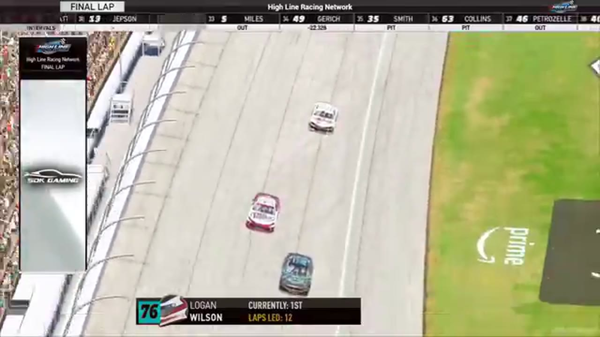

Race 7 at Michigan
Trevor Haley and Cory Cook split the stages, but Randy Showers timed the closing run and passed Logan Wilson for his first Highline win.

- Date
- December 29, 2025
- Track
- Michigan
- Race tape
- 2h 25m
- Exact chapters
- 18
Randy Showers reaches the record
The primary Michigan results readout records Randy Showers first, Craig Martin second, and Brandon Hinton third.
TAPE-SUPPORTED. Only explicitly supported positions are published; a nearby running order is never promoted into a finish.18 ways back into the race
Every link opens the complete broadcast at the reviewed timestamp. Chapter summaries are navigation claims unless explicitly marked as result-supported.
-
RESTART · MIDDLEOPEN EXACT CUT
The Michigan field takes the opening green
S1 / R7 at 1:04:03: The official Michigan race broadcast reaches the opening green, with Logan Wilson and Trevor Haley among the first drivers named. This cut begins before the launch and stays with the first live-race call.
-
BATTLE · MIDDLEOPEN EXACT CUT
Matt Brown and Cory Cook carry the Michigan lead battle
S1 / R7 at 1:12:15: The Michigan pack compresses in a front-pack fight while Matt Brown and Cory Cook are named on the call. The chapter keeps the live battle intact and makes no finishing-order claim.
-
BATTLE · MIDDLEOPEN EXACT CUT
Cory Cook and Tyler Gothard carry the Michigan lead battle
S1 / R7 at 1:13:09: The Michigan pack compresses in a front-pack fight while Cory Cook and Tyler Gothard are named on the call. The chapter keeps the live battle intact and makes no finishing-order claim.
-
STAGE · MIDDLEOPEN EXACT CUT
Stage 2 scoring discussion at Michigan
S1 / R7 at 1:15:26: The broadcast enters a stage-scoring discussion at Michigan with Nick Bowman and Matt Brown in the scoring call. The clip preserves the on-air timing or points call without promoting it into a complete stage result; the accepted feature result ledger remains separate.
-
STRATEGY · MIDDLEOPEN EXACT CUT
Pit strategy starts moving the Michigan field
S1 / R7 at 1:30:52: Pit timing starts to reorganize the field. The clip is a strategy receipt from the primary Michigan broadcast, not a reconstructed scoring sheet.
-
RESTART · MIDDLEOPEN EXACT CUT
Nick Bowman and Tyler Gothard bring Michigan back to green
S1 / R7 at 1:33:10: Nick Bowman, Tyler Gothard, Trevor Haley, and Logan Wilson are in the booth's front-pack call as Michigan returns to green with 14 laps to go. The cut keeps the restart launch and the first lap of lane development together.
-
BATTLE · MIDDLEOPEN EXACT CUT
Nick Bowman leads Michigan as John Miles heads to pit road
A John Miles off-track signal sends the No. 69 toward pit road, while the live camera returns to Nick Bowman leading with eight laps remaining. The card preserves both states without labeling Bowman as part of the incident.
-
STRATEGY · MIDDLEOPEN EXACT CUT
Randy Switzer enters the Michigan pit-strategy swing
S1 / R7 at 1:39:01: Pit timing starts to reorganize the field, with Randy Switzer, Trevor Haley, and Shawn Stamper named in the sequence. The clip is a strategy receipt from the primary Michigan broadcast, not a reconstructed scoring sheet.
-
INCIDENT · MIDDLEOPEN EXACT CUT
Cory Cook is caught in the Michigan caution replay
S1 / R7 at 1:42:21: The caution sequence centers the replay call on Cory Cook. This is a source-bounded incident window; it preserves what the booth reviews without assigning unsupported fault.
-
RESTART · CLOSINGOPEN EXACT CUT
Nick Bowman and Craig Martin bring Michigan back to green
S1 / R7 at 1:47:25: Nick Bowman, Craig Martin, Matt Brown, and James Smith are in the booth's front-pack call as Michigan returns to green. The cut keeps the restart launch and the first lap of lane development together.
-
INCIDENT · CLOSINGOPEN EXACT CUT
Michigan measures the fallout from its largest wreck
The replay closes on contact involving Michael Jennings, Randy Switzer, Jerry Fassett, and Shawn Stamper. HLRN calls it the biggest wreck of the night before resetting the field for the next restart.
-
RESTART · CLOSINGOPEN EXACT CUT
Logan Wilson and Craig Martin bring Michigan back to green
S1 / R7 at 1:52:40: Logan Wilson, Craig Martin, Randy Showers, and Brandon Hinton are in the booth's front-pack call as Michigan returns to green. The cut keeps the restart launch and the first lap of lane development together.
-
RESULT · CLOSINGOPEN EXACT CUT
Randy Showers is confirmed atop the Michigan results
The primary Michigan results readout records Randy Showers first, Craig Martin second, and Brandon Hinton third.
-
INTERVIEW · CLOSINGOPEN EXACT CUT
Randy Showers tells the winner's side
S1 / R7 at 2:05:17: Randy Showers, Craig Martin, and Brandon Hinton join the HLRN booth for a first-person race account. The interview is preserved as context and does not create a placement claim outside the accepted result ledger.
-
INTERVIEW · CLOSINGOPEN EXACT CUT
Randy Showers explains the fuel margin behind his Michigan win
Randy Showers joins the booth after Logan Wilson runs out of fuel and explains that he reached the last lap with roughly half a lap of margin. Trevor Haley is invited into the same post-race conversation.
-
POSTRACE · CLOSINGOPEN EXACT CUT
The Michigan desk revisits the stage-scoring discussion
S1 / R7 at 2:12:52: The reviewed live-race close has passed before this Michigan stage booth review begins. It remains post-race context, not a new incident, stage, strategy call, finish, or result receipt.
-
POSTRACE · CLOSINGOPEN EXACT CUT
Randy Showers and Jim Sagredo return in the Michigan post-race contact review
S1 / R7 at 2:17:42: The reviewed live-race close has passed before this Michigan incident booth review begins with Randy Showers, Jim Sagredo, and Brian Hayes named in the discussion. It remains post-race context, not a new incident, stage, strategy call, finish, or result receipt.
-
POSTRACE · CLOSINGOPEN EXACT CUT
Matt Brown and Nick Bowman return in the Michigan post-race contact review
S1 / R7 at 2:19:59: The reviewed live-race close has passed before this Michigan incident booth review begins with Matt Brown, Nick Bowman, and Jim Sagredo named in the discussion. It remains post-race context, not a new incident, stage, strategy call, finish, or result receipt.
All 20 official winners are backed by position-specific calls in a primary broadcast or an HLRN-authored companion episode. Complete finishing orders, points, and starts remain open until owner records are supplied.